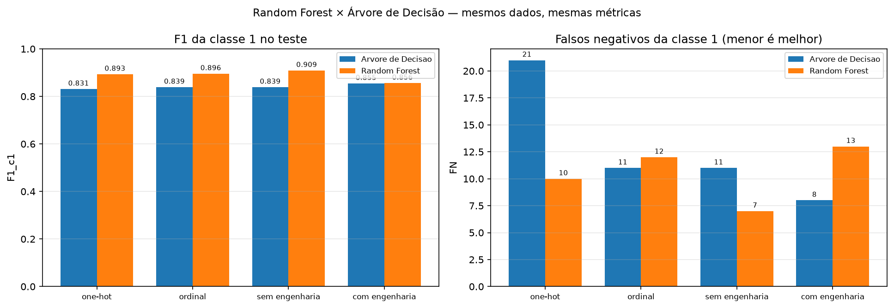
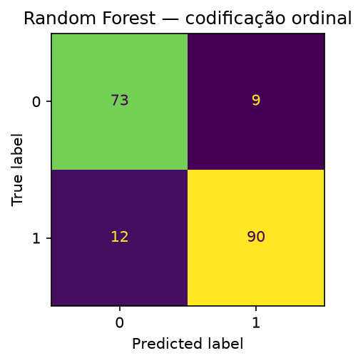

Aprendizado de Máquina · PPGCC/UFPI
Predição de Doença Cardíaca:
Random Forest × Árvore de Decisão
Mesmo protocolo de avaliação, dois modelos
Comparação de resultados e otimizações
Integrantes:
- Arthur Fernando Elvas Bohn — 20261001997
- Diego Cordeiro de Oliveira — 20261002180
- Keoma de Sousa Coelho — 20261004952
Professor:
- Doutor Vinicius Ponte Machado
Disciplina:
- Aprendizado de Máquina — PPGCC/UFPI
2
O que estamos comparando
Pergunta: mantendo exatamente o mesmo tratamento dos dados, a mesma busca e as
mesmas métricas, o que muda quando trocamos uma árvore única por uma
floresta de 300 árvores?
Mantido igual
- Base Heart Failure (918 registros, 11 atributos).
- Split estratificado 80/20, semente 42 → 734 treino / 184 teste.
RepeatedStratifiedKFold 5 × 2 na busca.- Grade de 864 combinações por codificação.
- Refit por F1 da classe 1.
- Ablação, engenharia de features, baseline e IC 95%.
O que muda
- Estimador: 1 árvore (profundidade 3) × 300 árvores.
- Aleatoriedade: bootstrap +
max_features por nó.
- Métricas extra: OOB score e dispersão das importâncias.
- Novo eixo: sensibilidade ao nº de árvores.
- Interpretação: caminho único × importância agregada.
Por que é uma comparação justa: o estimador é a única variável
alterada — qualquer diferença de resultado é atribuível ao modelo, não ao protocolo.
3
Pipeline e fases da execução
- Limpeza: zeros de
Cholesterol/RestingBP → NaN.
- Pré-processamento: imputação (mediana/média/moda) + escala; categóricas em one-hot ou ordinal.
- Modelo:
RandomForestClassifier(n_estimators=300).
- Busca: 864 combinações × 10 folds, refit em F1_c1.
- Teste reservado: acurácia, precisão, recall, F1 por classe, F1 macro, IC 95%, FN/FP.
- Interpretação: importância média, dispersão entre árvores e permutação.
- Ablação: remove 1 atributo por vez.
- Engenharia: 5 razões/interações clínicas.
- Nº de árvores: 100, 300, 500 e 800.
- Comparação: tabelas e deltas contra a árvore.
MLflow: 26 runs no
experimento heart_failure_random_forest, no mesmo banco da árvore.
4
Busca em grade: mesma grade, custo maior
| Parâmetro |
Valores |
| Imputação |
median, mean, most_frequent |
| criterion |
gini, entropy |
| max_depth |
3, 5, 7, None |
| min_samples_split |
2, 5, 10 |
| min_samples_leaf |
1, 3, 5 |
| max_features |
None, sqrt |
| class_weight |
None, balanced |
| n_estimators |
300 (fixo; testado à parte) |
| Item |
one-hot |
ordinal |
| Combinações |
864 (17.280 fits no total) |
| Tempo de busca |
12,0 min |
14,4 min |
| Melhor F1_CV |
0,8809 |
0,8799 |
| OOB score |
0,8583 |
0,8583 |
| max_depth |
None |
7 |
| min_samples_leaf |
5 |
1 |
| Imputação |
median |
mean |
- As duas codificações convergiram para
entropy, sqrt e
balanced.
- Floresta: árvores profundas (média 9,9 e 7,0) combinadas por média.
- Árvore: profundidade 3 — a busca preferiu um modelo raso.
- Custo: poucos segundos (árvore) → ~26 min (floresta, duas codificações).
5
Random Forest no teste: one-hot × ordinal
| Codificação |
Acurácia |
Prec_c1 |
Rec_c1 |
F1_c0 |
F1_c1 |
F1_macro |
FN |
FP |
IC 95% F1_c1 |
| ordinal |
0,8859 |
0,9091 |
0,8824 |
0,8743 |
0,8955 |
0,8849 |
12 |
9 |
0,8469–0,9368 |
| one-hot |
0,8804 |
0,8846 |
0,9020 |
0,8642 |
0,8932 |
0,8787 |
10 |
12 |
0,8442–0,9347 |
- Ordinal: melhor F1_c1, melhor precisão da classe 1 e apenas 9 falsos positivos.
- One-hot: melhor recall da classe 1 (0,9020) e 10 falsos negativos.
- Baseline (classe majoritária): F1_c1 0,7133 com 82 falsos positivos → a floresta
supera com folga.
CV ≠ teste: a melhor na validação cruzada foi a one-hot (0,8809) e a
melhor no teste foi a ordinal (0,8955). A diferença entre as duas não é conclusiva (IC 95% se
sobrepõem).
6
Random Forest × Árvore: resultado no teste
| Cenário |
F1_c1 árvore |
F1_c1 RF |
ΔF1_c1 |
FN árvore |
FN RF |
F1_macro árvore |
F1_macro RF |
| one-hot |
0,8308 |
0,8932 |
+0,0624 |
21 |
10 |
0,8200 |
0,8787 |
| ordinal |
0,8387 |
0,8955 |
+0,0568 |
11 |
12 |
0,8035 |
0,8849 |
| sem engenharia |
0,8387 |
0,9091 |
+0,0704 |
11 |
7 |
0,8035 |
0,8948 |
| com engenharia |
0,8545 |
0,8558 |
+0,0012 |
8 |
13 |
0,8192 |
0,8341 |

- A floresta venceu nos 4 cenários (ΔF1_c1 de +0,0012 a +0,0704).
- Melhor geral: RF sem engenharia — 7 FN, 12 FP, F1_c1 0,9091.
- Melhor árvore: com engenharia — 8 FN, mas 24 FP e F1_macro 0,8192.
- No ordinal, a RF troca 15 falsos positivos por 1 falso negativo.
7
O erro que mais importa: falsos negativos
| Modelo |
TN |
FP |
FN |
TP |
Recall_c1 |
F1_c1 |
| RF sem engenharia |
70 |
12 |
7 |
95 |
0,9314 |
0,9091 |
| RF ordinal |
73 |
9 |
12 |
90 |
0,8824 |
0,8955 |
| RF one-hot |
70 |
12 |
10 |
92 |
0,9020 |
0,8932 |
| Árvore com engenharia |
58 |
24 |
8 |
94 |
0,9216 |
0,8545 |
| Árvore ordinal |
58 |
24 |
11 |
91 |
0,8922 |
0,8387 |
| Árvore one-hot |
70 |
12 |
21 |
81 |
0,7941 |
0,8308 |
| Baseline (maioria) |
0 |
82 |
0 |
102 |
1,0000 |
0,7133 |

Trade-off explícito: a RF
ordinal tem só 9 FP (menos alarmes falsos), mas 12 FN; a RF sem engenharia reduz para 7 FN com 12
FP.
Leitura clínica: o baseline "chutar a
maioria" tem 0 FN, mas erra todos os 82 sadios — por isso a acurácia isolada engana e o F1 macro é
necessário.
8
Ablação: a floresta é mais robusta
| Cenário |
F1_c1 árvore |
F1_c1 RF |
ΔF1_c1 |
F1_macro árvore |
F1_macro RF |
| todos os atributos |
0,8387 |
0,9091 |
+0,0704 |
0,8035 |
0,8948 |
| sem ST_Slope |
0,7897 |
0,8600 |
+0,0703 |
0,7764 |
0,8467 |
| sem ChestPainType |
0,7647 |
0,8400 |
+0,0753 |
0,7360 |
0,8248 |
| sem MaxHR |
0,7890 |
0,9005 |
+0,1115 |
0,7412 |
0,8834 |
| sem Oldpeak |
0,7647 |
0,9005 |
+0,1358 |
0,7360 |
0,8834 |
| sem ExerciseAngina |
0,8042 |
0,8627 |
+0,0585 |
0,7988 |
0,8460 |
- RF venceu nos 12 cenários (ΔF1_c1 de +0,0585 a +0,1358).
- Árvore: remover
Oldpeak, MaxHR ou
ChestPainType derruba o F1_c1 para 0,76–0,79.
- Floresta: fica entre 0,8400 e 0,9091 — o ensemble compensa a variável ausente.
- Nas duas abordagens, manter todos os atributos maximiza o F1_c1.
9
Engenharia de features: efeito oposto
| Modelo / cenário |
Nº atributos |
F1_c1 (teste) |
F1_macro |
FN |
F1_CV |
| Árvore — sem engenharia |
11 |
0,8387 |
0,8035 |
11 |
0,8604 |
| Árvore — com engenharia |
16 |
0,8545 |
0,8192 |
8 |
0,7946 |
| RF — sem engenharia |
11 |
0,9091 |
0,8948 |
7 |
0,8744 |
| RF — com engenharia |
16 |
0,8558 |
0,8341 |
13 |
0,8775 |
- Árvore: engenharia melhora o teste (+0,0158) e piora a CV
(−0,0658) → ganho não confirmado.
- Floresta: engenharia piora o teste (−0,0533) e mantém a CV
estável (+0,0031).
- Hipótese: o ensemble já constrói interações combinando cortes; as 5 razões viram ruído e diluem o
sorteio de atributos por nó.
Conclusão prática: engenharia de features deve ser testada
por modelo — não é um ganho universal.
10
Importância das variáveis e estabilidade
| Variável |
Impureza (média) |
Desvio |
Permutação (ΔF1) |
| ST_Slope |
0,2687 |
0,1328 |
0,1367 |
| ChestPainType |
0,1432 |
0,0913 |
0,0391 |
| MaxHR |
0,1083 |
0,0539 |
0,0158 |
| Oldpeak |
0,1030 |
0,0602 |
0,0226 |
| ExerciseAngina |
0,0860 |
0,0916 |
0,0259 |
| Cholesterol |
0,0739 |
0,0328 |
0,0163 |
Desvio alto em ST_Slope:
em algumas árvores ela domina a decisão, em outras é secundária — daí a importância de reportar a
dispersão.
Contraste com a árvore: a árvore usa
ExerciseAngina e ST_Slope na raiz; na floresta a decisão é distribuída e
ChestPainType sobe para a segunda posição.
11
Robustez: CV, nº de árvores e OOB
| Modelo / cenário |
F1_CV |
F1_c1 teste |
| Árvore ordinal |
0,8604 |
0,8387 |
| Árvore one-hot |
0,8550 |
0,8308 |
| RF ordinal |
0,8799 |
0,8955 |
| RF one-hot |
0,8809 |
0,8932 |
| RF sem engenharia |
0,8744 |
0,9091 |
| Nº de árvores |
F1_c1 |
FN |
| 100 |
0,8878 |
11 |
| 300 |
0,8932 |
10 |
| 500 |
0,8976 |
10 |
| 800 |
0,8976 |
10 |
- Ganho decrescente: 100 → 300 sobe +0,0054; 300 → 500 sobe +0,0044; 500 e 800 são
idênticos.
- OOB score 0,8583 (630 de 734 corretos fora do bootstrap) — validação interna
coerente com a CV.
- IC 95% ainda se sobrepõem entre RF e árvore: vantagem consistente, mas não
estatisticamente conclusiva com 184 pacientes.
12
MLflow: dois experimentos, uma comparação
| Experimento |
Modelo |
Runs |
heart_failure_random_forest |
RandomForest (300) |
26 |
heart_failure_arvore_decisao |
DecisionTree |
111 |
Runs da floresta
random_forest_onehot / random_forest_ordinalablacao_atributos + 12 filhasengenharia_features (2 filhas)sensibilidade_n_estimators (4 filhas)comparacao_rf_vs_arvore — deltas registrados como métricasrelatorio_artefatos — CSVs, PNGs e ZIP
Reproduzir e comparar:
mlflow ui --backend-store-uri sqlite:///mlflow.db
- Mesmo banco SQLite → os dois experimentos aparecem lado a lado na UI.
- Na aba Compare:
f1_cv, F1_c1, F1_macro,
FN, tempo_busca_s e oob_score.
- Cada run guarda parâmetros, métricas, modelo treinado e artefatos.
Rastreabilidade: todos os números desta apresentação saem de
docs/handle_forest/resultados/execucao_20261030_205115/.
13
Conclusão
- Melhor no teste: Random Forest com todos os atributos — F1_c1
0,9091, 7 FN, 12 FP, F1_macro 0,8948.
- Mais robusto na CV: RF one-hot — F1_CV 0,8809 (árvore:
0,8604).
- RF superior em todos os cenários: ΔF1_c1 de +0,0012 a +0,0704 nos cenários
principais e de +0,0585 a +0,1358 na ablação.
- Engenharia de features: ajudou a árvore e prejudicou a floresta → testar por
modelo.
- Custo: busca ~26 min (RF) contra segundos (árvore); predição continua
barata.
- Interpretabilidade: a árvore oferece um caminho auditável; a floresta exige
importância agregada + permutação.
Recomendação: para
triagem, usar a floresta com os 11 atributos (menos falsos negativos); manter a árvore quando a
explicabilidade do caminho for requisito.
Próximos passos
- Ajuste de limiar de decisão para reduzir FN.
- Calibração de probabilidades e SHAP.
- Validação em base externa.
- Comparação com Gradient Boosting.
Obrigado!